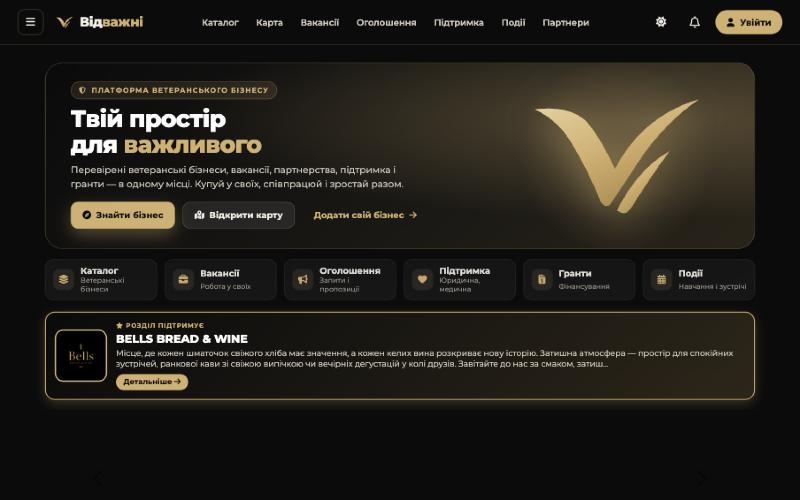

01
Відважні
Уже працює · активно доопрацьовуєтьсяПлатформа для ветеранського бізнесу. Об’єднує бізнеси ветеранів, ветеранок та їхніх родин: людей знаходять у каталозі й на карті, а ветерани публікують вакансії та оголошення, дізнаються про гранти й навчання, спілкуються зі спільнотою. Кожен бізнес перевіряє модератор.
- Каталог і карта перевірених бізнесів
- Вакансії, оголошення, підтримка, гранти, події
- Реклама бізнесів за областю та анімовані банери
- Мобільний застосунок (PWA) і веб-версія
Python · DjangoPostgreSQLCloudinaryTelegram APImonobankOpenFreeMapPWA



мобільний застосунок · світла й темна тема · каталог